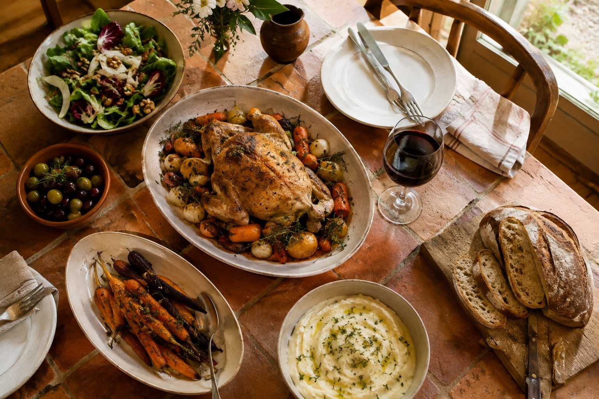
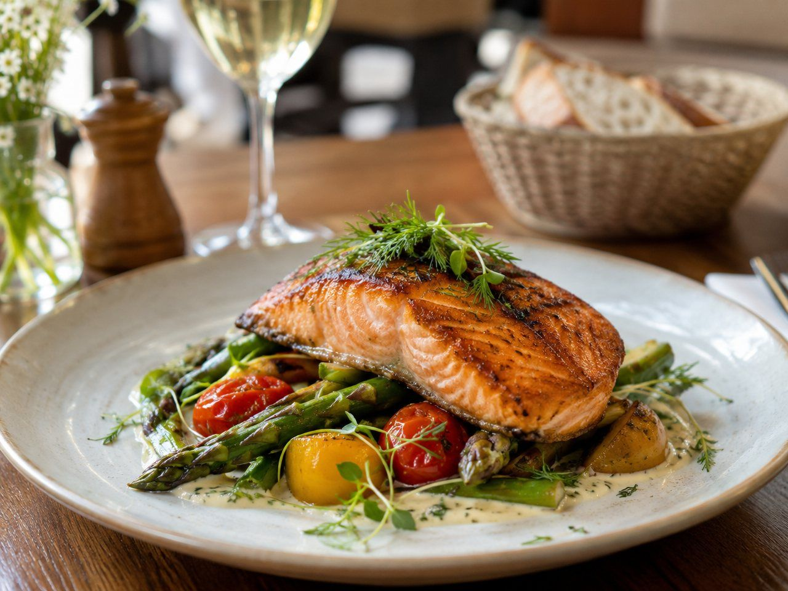
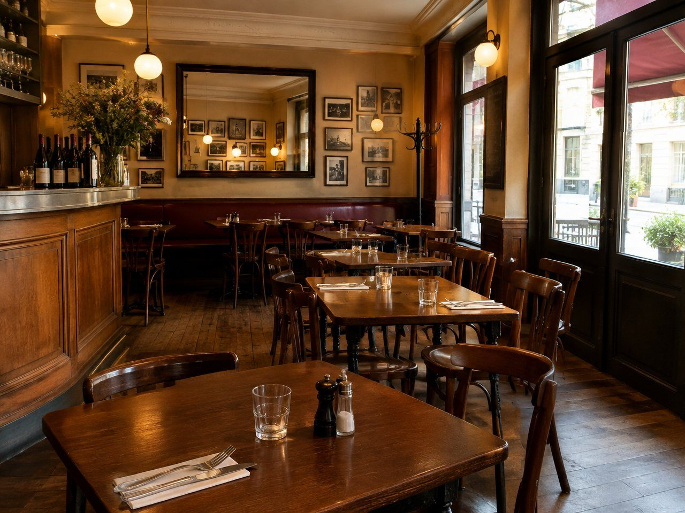

Une cuisine simple, de saison, qui change avec les arrivages. Venez déjeuner, on s'occupe du reste.

On cuisine ce qu'apportent les producteurs voisins, quand c'est bon.
Les sauces, le pain, les desserts : tout est préparé ici, chaque jour.
Une petite carte de vins choisis chez des vignerons indépendants.


12 rue Exemple, 00000 Ville
06 00 00 00 00
contact@exemple.fr